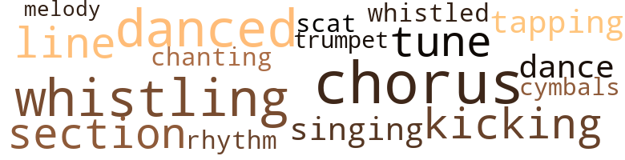
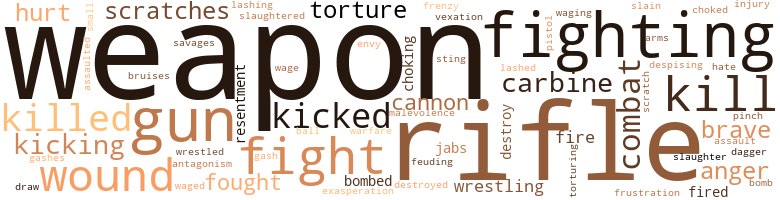

Flame in the Icebox (The), by Morrison, C.T. (1968)
28 music-related terms matched in this text.
Most frequent terms in this topic: chorus (4); danced (3); whistling (3); line (2); section (2)
chorus.n.01
Definition: any utterance produced simultaneously by a group
| word | sentence |
|---|---|
| chorus | Worth quickly calmed down and stretched out again as a dead silence covered the hut , tempered only by the chorus of crickets in the background . |
| chorus | They all sprung from the ditch , screaming in a frenzied chorus as they charged toward the flaming , blackened area that once had been dense green forest . |
| chorus | A light chorus of approval came from the troops . |
| chorus | The earth quaked as a great , evil explosion , made up of countless gun shots , reverberated against the very sky , a frenzied , agonizing chorus of screams in the background . |
cornet.n.01
Definition: a brass musical instrument with a brilliant tone; has a narrow tube and a flared bell and is played by means of valves
| word | sentence |
|---|---|
| trumpet | They just stood there with that strange somber , placid look on their faces , as if their ears were tuned to a mystic message from a distant trumpet that needed no reply on their part . |
cymbal.n.01
Definition: a percussion instrument consisting of a concave brass disk; makes a loud crashing sound when hit with a drumstick or when two are struck together
| word | sentence |
|---|---|
| cymbals | The terms " V.C. " and " these people " clashed like cymbals in his mind , creating an intolerable dissonance . |
dance.v.03
Definition: skip, leap, or move up and down or sideways
| word | sentence |
|---|---|
| dance | The countryside remained still and silent , the myriad of tall , slender blades of grass aching to dance to the whisper of a breeze . |
| danced | So they just lay there with their eyes closed , observing the bizarre flashes and subtle spots that danced in a background of abysmal black - ness . |
| danced | As night 's curtain fell , the crickets danced into the spotlight , beeping incessandy , the racket leaping through the blackness . |
| danced | All the while , the one theme that danced invisibly on his tongue and vibrated like an elegiac melody in his head was , War - War - War - War . |
intonation.n.03
Definition: the act of singing in a monotonous tone
| word | sentence |
|---|---|
| chanting | The incessant , monotonous chanting of the crickets had stopped before the first rays of the sun , halting as precisely as if a final , emphatic dropping of a baton had occurred . |
kick.v.04
Definition: kick a leg up
| word | sentence |
|---|---|
| kicking | They wrestled in the dust for a moment , kicking and struggling for leverage , taking an occasional poke at one another . |
| kicking | Miller and Hemphauser found two other mines , which they quickly destroyed by stomping and kicking until all the spikes were broken near the foundation . |
rhythm.n.04
Definition: the arrangement of spoken words alternating stressed and unstressed elements
| word | sentence |
|---|---|
| rhythm | They were panting to the rhythm of their drumming hearts , their faces gleaming with sweat , and their shoulders hunched as , turtlelike , they tried to hide under their cumbersome steel helmets . |
scat.n.01
Definition: singing jazz; the singer substitutes nonsense syllables for the words of the song and tries to sound like a musical instrument
| word | sentence |
|---|---|
| scat | Geniah , who was sitting on his thatch pallet calmly smoking a cigarette , offered Hemp - hauser a scat on the floor . |
section.n.01
Definition: a self-contained part of a larger composition (written or musical)
| word | sentence |
|---|---|
| section | Soon they had made their way out of the smoke altogether , drawing within twenty yards of a thick , dark section of the woods . |
| section | This section was a replica of the Viet Cong position before the napalm bomb . |
singing.n.01
Definition: the act of singing vocal music
| word | sentence |
|---|---|
| singing | Then he turned over and gazed curiously toward the jungle 's massive , black walls , the incessant singing of crickets and chirping of birds swelling his head , momentarily causing him to both praise and damn nature 's frivolous noisemakers . |
tapdance.v.01
Definition: dance and make rhythmic clicking sounds by means of metal plates nailed to the sole of the dance shoes
| word | sentence |
|---|---|
| tapping | It was as if they were using the rifle fire as a means of communication between them - like tapping out coded messages . |
tune.n.01
Definition: a succession of notes forming a distinctive sequence
| word | sentence |
|---|---|
| tune | And a steady barrage from the machine guns continued to beat an allegro tune on the rims of the ditch , spraying dirt and kicking up a continuous cloud of dust . |
| tune | A few minutes after the sergeant had left , Private Arthur Harringville came bouncing through the woods whistling a catchy little tune . |
| line | There they squatted and kneeled fearfully in a single line - a line that told much of the history of their species . |
| line | There they squatted and kneeled fearfully in a single line - a line that told much of the history of their species . |
| melody | All the while , the one theme that danced invisibly on his tongue and vibrated like an elegiac melody in his head was , War - War - War - War . |
whistle.v.01
Definition: make whistling sounds
| word | sentence |
|---|---|
| whistling | Bullets were zinging , whistling and ricocheting only inches above the heads of their targets . |
| whistling | A few minutes after the sergeant had left , Private Arthur Harringville came bouncing through the woods whistling a catchy little tune . |
| whistled | The troops ducked their heads in stark terror , their bulging eyes nervously searching the other faces in the ditch as death whistled and ricocheted all about them . |
| whistling | The Viet Cong bodies twitched upon the impact of hot , whistling lead . |
257 violence-related terms matched in this text.
Most frequent terms in this topic: weapons (48); rifle (33); fighting (15); weapon (10); fight (10)
abrasion.n.01
Definition: an abraded area where the skin is torn or worn off
| word | sentence |
|---|---|
| scratches | Examining the bottom of the column , he saw numerous scratches made by chains earlier . |
| scratch | As soon as they each had etched a shiny scratch on the link , Worth looked up , and with a satisfied smile signaled for a halt . |
| scratches | They kept sawing away , but now they began checking the depth of the scratches every few minutes . |
| scratches | After working another ten minutes they found that the scratches on the links were no deeper than when they had started . |
aggravation.n.01
Definition: an exasperated feeling of annoyance
| word | sentence |
|---|---|
| exasperation | Worth , falling backward with exasperation , lay down again and closed his eyes in a halfhearted effort to go back to sleep . |
anger.n.01
Definition: a strong emotion; a feeling that is oriented toward some real or supposed grievance
| word | sentence |
|---|---|
| anger | Then a wave of anger swept through him , causing him momentarily to grit his teeth and hammer his fist on the ground . |
| anger | The troops pulled themselves off the ground , their faces showing dismay and anger . |
| anger | Then he shook with fear , anger and disgust , making two dry heaves . |
annoyance.n.02
Definition: anger produced by some annoying irritation
| word | sentence |
|---|---|
| vexation | There was a slight vexation etched on Hemphauser 's face , as if a lingering distaste plagued him . |
assail.v.01
Definition: attack someone physically or emotionally
| word | sentence |
|---|---|
| assaulted | Hemphauser assaulted him with a round of profanity in denying the accusation just as Holey Hat and Old Folks walked into the hut , carrying the water bucket and two bowls of rice . |
bombard.v.02
Definition: throw bombs at or attack with bombs
| word | sentence |
|---|---|
| bombed | Miller led the others to a point near the bombed area of the forest where the growth was n't thick . |
| bombed | And we saw some of their bodies after we bombed the V.C. " " I see , " the captain said , almost yawning in the lieutenant 's face . |
bruise.n.01
Definition: an injury that doesn't break the skin but results in some discoloration
| word | sentence |
|---|---|
| bruises | Then , ignoring their bruises , they immediately threw their weapons forward and began firing over the rim of the ditch . |
butcher.v.01
Definition: kill (animals) usually for food consumption
| word | sentence |
|---|---|
| slaughtered | The weapons had indeed been confiscated from the American company that was slaughtered in a cross fire , the collaborator reported . |
cannon.n.04
Definition: heavy automatic gun fired from an airplane
| word | sentence |
|---|---|
| cannons | Then two F-105 Thunderchiefs appeared from out of no - where , streaking down toward tl ^ ie Viet Cong position , their cannons spitting as they attracted the enemy 's machine-gun fire . |
| cannon | squarely on the chin , driving him back a couple of steps as if shot out of a cannon . |
| cannons | Then the plane 's cannons opened fire , cutting down Viet Cong and ripping any - thing in their path , bringing up more dust from the ground . |
carbine.n.01
Definition: light automatic rifle
| word | sentence |
|---|---|
| carbines | Now they all held their rifles and carbines diagonally out in front , their senses keen with suspicion , as their eyes searched the forest ahead and the high grass on all sides . |
| carbine | Holding his carbine down at one side and pointed at the ground , the sergeant rattled off a few questions to the villagers , but he received no answers . |
| carbines | There were thirteen rifles , eight carbines , six automatic rifles , six .30-caliber machine guns , five .50-caliber machine guns , seven mortars and two bazookas , all United States-made . |
| carbine | The sergeant , noticing his expression , looked toward the woods also , at the same time slipping his carbine from his shoulder . |
contemn.v.01
Definition: look down on with disdain
| word | sentence |
|---|---|
| despising | Arms wrapped around each other , Worth and Hemphauser continued their torturous journey , talking , and despising Provi - dence for letting them live . |
craze.n.02
Definition: state of violent mental agitation
| word | sentence |
|---|---|
| frenzy | Then they started shoveling the dirt in a joyous frenzy , laughing and chatting all the while . |
cut.n.05
Definition: a wound made by cutting
| word | sentence |
|---|---|
| gashes | There were bandages over a couple of head gashes . |
| gash | Worth had caught a couple of slugs in the thigh , and he had a gash on his forehead , sustained as he fell to the rocky creek bed , knocking him unconscious . |
dagger.n.01
Definition: a short knife with a pointed blade used for piercing or stabbing
| word | sentence |
|---|---|
| dagger | A strange , soft cry started up from his toes , quickly maturing to a howl that , like a dagger , plunged home in every witnessing heart . |
destroy.v.04
Definition: put (an animal) to death
| word | sentence |
|---|---|
| destroyed | Miller and Hemphauser found two other mines , which they quickly destroyed by stomping and kicking until all the spikes were broken near the foundation . |
| destroy | \ Hence they marched across the fertile green countryside under the intense sun , waging battle against time , space and heat in the hope that they would subsequently wage battle against the enemy and destroy him . |
| destroy | Finally they would destroy the enemy and seize another cache of arms . |
draw.v.23
Definition: pull (a person) apart with four horses tied to his extremities, so as to execute him
| word | sentence |
|---|---|
| draw | Perhaps the seeds of the past are planted too thick for an alternative , and a taste of the horrid result is needed for man to destroy his old blueprint for life and draw up a new plan . |
engage.v.07
Definition: carry on (wars, battles, or campaigns)
| word | sentence |
|---|---|
| waged | For this funny-looking little flying machine momentarily represented their nation , their families and friends back home and , essentially , the physical well-being and security they craved while estranged in this wretched corner of nowhere , and for no comprehensible reason - no reason except that they were men , and men have always waged war . |
| waging | \ Hence they marched across the fertile green countryside under the intense sun , waging battle against time , space and heat in the hope that they would subsequently wage battle against the enemy and destroy him . |
| wage | \ Hence they marched across the fertile green countryside under the intense sun , waging battle against time , space and heat in the hope that they would subsequently wage battle against the enemy and destroy him . |
envy.n.01
Definition: a feeling of grudging admiration and desire to have something that is possessed by another
| word | sentence |
|---|---|
| envy | But as the heli - copter swooped down for a landing almost at their feet , these shiny , dreamy bubbles burst , disappearing with a spray of well - concealed envy held toward the smiling McCaffrey . |
feud.v.01
Definition: carry out a feud
| word | sentence |
|---|---|
| feuding | So , like two feuding crones wanting to be cronies again , they sat there with long , bitter faces , nursing their disdain for each other while biding their time braiding . |
fight.n.02
Definition: the act of fighting; any contest or struggle
| word | sentence |
|---|---|
| combat | And like you said , he 's not a regular combat soldier , but he spreads propaganda . " |
| Fighting | Fighting fatigue and bore - dom , they trudged forward , trying to stay alert - trying to remind themselves that this was war , not a hiking trip . |
| fighting | You see , that was the first battle my company has lost in three years of fighting . |
| fighting | They said that his company always gets special assignments where the fighting is expected to be heavy but where the V.C. does n't have much manpower . |
| combat | I 'm a combat soldier . |
| combat | So you see , the only life I know is that of a combat soldier . " |
| combat | Hemphauser continued to give words of reassurance as he took a combat bandage from his pistol belt and wrapped it around Worth 's wounded leg . |
| combat | As Hemphauser wrapped a combat bandage around Miller 's shoulder , Miller continued groaning , a feeble , agonizing twist accompanying each cough . |
fight.n.05
Definition: a boxing or wrestling match
| word | sentence |
|---|---|
| fight | Under the teeming jungle 's surface they and the other animals had begun a day 's work - another intensified fight for survival - while the ceremonies for the advent were being proudly and magnificently performed by the birds . |
| fight | They said fight , and I fought . |
| fight | The GI 's were quickly brought under control , and then the major questioned them as to the cause of the fight . |
| fight | " You two fight when you 're angry , and fight when you 're happy too , do n't you ? " |
| fight | " You two fight when you 're angry , and fight when you 're happy too , do n't you ? " |
| fight | This war tears my heart apart , but I promised myself a long time ago when I gave up medicine , that I 'd fight until I die - fight to bring progress to South Vietnam . |
fight.v.02
Definition: fight against or resist strongly
| word | sentence |
|---|---|
| fighting | I respect a good soldier even when he 's fighting against me . |
| fighting | You know , it 's strange that we 're both fighting against the same thing - against injustice , poverty and ignorance . |
| fighting | It 's just that we have different ways of fighting against these things . |
| fighting | You see , we 're just soldiers fighting for what we believe in . |
| fighting | Do you really believe in what you 're fighting for in this war ? " |
| fighting | For almost an hour the strange military confrontation re - mained unchanged , with the Americans fighting impatience , and the two sides exchanging a few rounds of fire every four or five minutes . |
| fighting | I mean , he is n't a traitor , but a rebel - like a member of the Confederacy fighting against the Union in the Civil War . |
| fought | " I feel like your forefathers felt when they fought England for independence . |
| fight | " The richest , most powerful , most influential country in the world has come halfway around the globe to fight in what is essentially a civil war in a small , weak nation . |
| fought | They said fight , and I fought . |
| fight | This war tears my heart apart , but I promised myself a long time ago when I gave up medicine , that I 'd fight until I die - fight to bring progress to South Vietnam . |
| fighting | After almost half an hour , Hemphauser gave up on fighting to pacify his pulsating nerves . |
| fighting | Why do those students , scholars and intellectuals back home take such a determined stand against our fighting here ? |
| fighting | Why do we stay here fighting despite so much adverse public opinion , both at home and abroad ? |
| fighting | Or is it conceivable - is it possible - that we are really fighting the Communists for the " right " to exploit these people ? |
| fight | So half the com - pany had to be lost before the others got the desire to fight again . |
| fighting | Now when I go back to the battalion and give my men some rest , while bringing the company up to full strength again , we will again become the best fighting company in the regiment . |
| fought | " I heard from some Special Forces men who had fought beside his company that he was a real demon . |
| fighting | When I was thirteen , I was running guns and information to the nationalists fighting against the French . |
| fight | But the disgust quickly gave way to convic - tion - to a determination to fight with ideas instead of with guns and bombs . |
firearm.n.01
Definition: a portable gun
| word | sentence |
|---|---|
| small-arms | It had sounded like only a single sniper ; but suddenly a barrage of small-arms fire exploded from the woods . |
frustration.n.03
Definition: a feeling of annoyance at being hindered or criticized
| word | sentence |
|---|---|
| frustration | " It just wo n't work , " Hemphauser said softly , his voice quivering with frustration . |
gag.v.06
Definition: cause to retch or choke
| word | sentence |
|---|---|
| choked | Gasping for breath , their bodies suddenly choked by a paralyzing stiffness , they plunged on their faces . |
| choking | A heavy , shadowed gloom embraced their moist , shiny faces , and they could hear each other 's labored breathing , caused by a choking anxiety . |
| choking | And a large , choking cloud of dust had been kicked up by their wild-swinging legs and feet . |
gun.n.01
Definition: a weapon that discharges a missile at high velocity (especially from a metal tube or barrel)
| word | sentence |
|---|---|
| gun | Standing beside him , holding a burp gun , was a rebel soldier who wore a rumpled hat , its twisted brim turned down and a few quarter-size holes in the crown . |
| gun | Behind him was the same enemy soldier wearing the tattered hat and carrying the burp gun . |
| guns | In reality this clamor and confusion was generated by two .50-caliber machine guns exploding from the forest , permeating the air with staccato coughing and kicking up dust all around . |
| guns | Then above the incessant clatter of the machine guns was heard a faint thud , immediately followed by a high-pitched hissing . |
| guns | And a steady barrage from the machine guns continued to beat an allegro tune on the rims of the ditch , spraying dirt and kicking up a continuous cloud of dust . |
| gun | Sneakers and Holey Hat , on each side of Old Folks , stepped toward the prisoners , rifle and burp gun aimed at them , as they cursed angrily . |
| guns | So we decided that if we could n't gain power through the ballot , we would gain it through guns and bombs . |
| guns | The sur - viving Viet Cong froze for a second , and before they could react , three American troop-carrying helicopters swooped to the ground , machine guns spitting fire from their sides , driving the enemy to cover . |
| guns | And evidently they had dug up the mortars and machine guns with which they had blasted the squad just before the planes saved the day for the GI 's . |
| guns | There were thirteen rifles , eight carbines , six automatic rifles , six .30-caliber machine guns , five .50-caliber machine guns , seven mortars and two bazookas , all United States-made . |
| guns | There were thirteen rifles , eight carbines , six automatic rifles , six .30-caliber machine guns , five .50-caliber machine guns , seven mortars and two bazookas , all United States-made . |
| guns | But the disgust quickly gave way to convic - tion - to a determination to fight with ideas instead of with guns and bombs . |
| gun | Their gun barrels jutted into the air at odd angles as they held the weapons against their shoulders and chests . |
| gun | A squatting Viet Cong carrying a submachine gun was perched at the front of the boat , and he was the first to jump onto the bank . |
| gun | The earth quaked as a great , evil explosion , made up of countless gun shots , reverberated against the very sky , a frenzied , agonizing chorus of screams in the background . |
hate.v.01
Definition: dislike intensely; feel antipathy or aversion towards
| word | sentence |
|---|---|
| hate | And I hate to see any soldier treat his enemy inhumanely . |
hostility.n.02
Definition: a state of deep-seated ill-will
| word | sentence |
|---|---|
| antagonism | Since their escape had failed , they had had little chance or inclination to direct their antagonism toward the enemy , so it now was coming out between themselves . |
hydrogen_bomb.n.01
Definition: a nuclear weapon that releases atomic energy by union of light (hydrogen) nuclei at high temperatures to form helium
| word | sentence |
|---|---|
| H-bomb | The barrels of the weapons , no less than their twisted , snarling faces , exuded an infinite , overwhelming , super - natural malevolence , becoming magnified to the loathsome - reverent image of an H-bomb . |
injury.n.01
Definition: any physical damage to the body caused by violence or accident or fracture etc.
| word | sentence |
|---|---|
| injury | I hope you survive this war without any serious injury , but for myself , I expect to be here off and on for a long time . |
jab.n.02
Definition: a quick short straight punch
| word | sentence |
|---|---|
| jabs | The impatient Viet Cong behind them gave the Americans a few rifle jabs as the column started burrowing through the immense black jungle again . |
| jabs | Rifle jabs and threats from the Viet Cong in the rear were without effect . |
kick.v.04
Definition: kick a leg up
| word | sentence |
|---|---|
| kicking | They wrestled in the dust for a moment , kicking and struggling for leverage , taking an occasional poke at one another . |
| kicking | Miller and Hemphauser found two other mines , which they quickly destroyed by stomping and kicking until all the spikes were broken near the foundation . |
kick_back.v.02
Definition: spring back, as from a forceful thrust
| word | sentence |
|---|---|
| kicked | A few of the Viet Cong yelled at them and kicked them , but the bodies did n't move . |
| kicking | In reality this clamor and confusion was generated by two .50-caliber machine guns exploding from the forest , permeating the air with staccato coughing and kicking up dust all around . |
| kicking | And a steady barrage from the machine guns continued to beat an allegro tune on the rims of the ditch , spraying dirt and kicking up a continuous cloud of dust . |
| kicked | Each of them kicked and struggled to free himself as the enemy clutched them , shouting threats and orders to stop . |
| kicked | Paying no attention to the chains on their wrists , they jerked and kicked and turned their bodies swiftly , struggling to best one another in the vigorous battle . |
| kicked | And a large , choking cloud of dust had been kicked up by their wild-swinging legs and feet . |
| kicked | Bullets peppered the air around the ditch and kicked up clouds of dust from the hard , dry earth . |
| kicked | They kicked the bodies and briefly ex - amined them , and quickly searched the pockets of the uniforms . |
kill.v.10
Definition: cause the death of, without intention
| word | sentence |
|---|---|
| killed | And as the two downed men heard him and saw the merciless expression on his face , they re - membered the malicious way he had killed Miller . |
| kill | Worth lay on the path challenging the enemy to kill him , lashing at them with gutter profanity . |
| killed | I tell you , it almost killed me last night . |
| killed | " Say what you want to say , " Worth persisted , " but let me tell you this : that major would just as soon have us killed as to take a crap . |
| killed | What do you think they would do to us if the major got killed out on patrol ? |
| killed | I knew I 'd get killed if I tried . " |
| kill | As individuals they disagree with each other 's principles ; but they do n't want to kill each other off . |
| killed | I do n't care who 's right or who 's wrong , or who 's winning or losing , or who 's getting killed or tortured . |
| killed | They said kill , and I killed . |
| kill | We 're greedy and selfish , and we kill each other by the thousands and millions , and we 'll always be this way . |
| kill | We pray to God one minute , and we kill one another the next . |
| kill | " Did you kill them all ? " |
| kills | When he kills a GI , he 's a hardened V.C. And when he kills five or more GI 's , he 's Ho Chi Minh 's cousin . " |
| kills | When he kills a GI , he 's a hardened V.C. And when he kills five or more GI 's , he 's Ho Chi Minh 's cousin . " |
| kill | I do n't know what they 're going to do , but if they were going to kill us , we would n't be alive now . " |
killing.n.02
Definition: the act of terminating a life
| word | sentence |
|---|---|
| kill | They said kill , and I killed . |
malevolence.n.01
Definition: wishing evil to others
| word | sentence |
|---|---|
| malevolence | The barrels of the weapons , no less than their twisted , snarling faces , exuded an infinite , overwhelming , super - natural malevolence , becoming magnified to the loathsome - reverent image of an H-bomb . |
murder.v.01
Definition: kill intentionally and with premeditation
| word | sentence |
|---|---|
| slain | Then the sergeant came to the part about the slain villagers . |
musket_ball.n.01
Definition: a solid projectile that is shot by a musket
| word | sentence |
|---|---|
| ball | Then he reached behind him and got a ball of twine from Skinny and tossed it to the prisoners , instructing them to tie the pulled grass into cylinders about six inches in diameter . |
open_fire.v.01
Definition: start firing a weapon
| word | sentence |
|---|---|
| fired | Then he quickly raised his rifle from his side and fired . |
| fire | Then the plane 's cannons opened fire , cutting down Viet Cong and ripping any - thing in their path , bringing up more dust from the ground . |
| fire | First of all , I think we caught them by surprise , and that one of their lookouts panicked , or just made a boner , in opening fire too soon . |
| fired | You see , they 're probably the same ones that my advance party fired on . " |
| fire | They managed to fire only a few wild bursts before the sheet of Viet Cong bullets hammered them into the rocky surface . |
pain.v.02
Definition: cause emotional anguish or make miserable
| word | sentence |
|---|---|
| hurt | I 'm treating you humanely , talking one man to another , and then you have to hurt my respect for you by saying something like that . |
| hurt | Also , you can smoke if you want to ; I guess it wo n't hurt anything . |
| hurt | This goddamn war . . . I did n't hurt you , did I ? |
pinch.n.02
Definition: an injury resulting from getting some body part squeezed
| word | sentence |
|---|---|
| pinch | Then each silently took a pinch of rice and pushed it into his mouth . |
pistol.n.01
Definition: a firearm that is held and fired with one hand
| word | sentence |
|---|---|
| pistol | Hemphauser continued to give words of reassurance as he took a combat bandage from his pistol belt and wrapped it around Worth 's wounded leg . |
rape.n.03
Definition: the crime of forcing a woman to submit to sexual intercourse against her will
| word | sentence |
|---|---|
| assault | The others were either initially wounded or had automatically fallen to the ground when shocked by the merciless assault and the wild commotion . |
resentment.n.01
Definition: a feeling of deep and bitter anger and ill-will
| word | sentence |
|---|---|
| resentment | But this shell of resentment was really caused by a malignant infection of his soul and con - science . |
| resentment | A college graduate and a draftee , Hemphauser accepted his military obligation without either pride or resentment . |
rifle.n.01
Definition: a shoulder firearm with a long barrel and a rifled bore
| word | sentence |
|---|---|
| rifle | Then he quickly raised his rifle from his side and fired . |
| rifle | He and Hemphauser were brought to the ground by rifle butts . |
| rifle | Then one of the Viet Cong motioned to Worth with his rifle , ordering him to stand up . |
| rifle | He thrust the end of his rifle barrel right before Worth 's eyes , rattling off a vicious threat . |
| rifle | When they slowed down too much , they received hard pokes in the ribs or on the spine from the rifle barrels behind them . |
| rifle | Gradually their hobbles became slower and slower , despite the rifle barrel poking them . |
| rifle | The impatient Viet Cong behind them gave the Americans a few rifle jabs as the column started burrowing through the immense black jungle again . |
| rifles | Now they all held their rifles and carbines diagonally out in front , their senses keen with suspicion , as their eyes searched the forest ahead and the high grass on all sides . |
| rifles | Hemphauser and Worth froze as they stared distrustfully at the two armed rebels , who held their rifles ready at the waistline . |
| rifle | Then the fellow crawled over to Worth and removed his shackle also , afterward rising and taking his rifle back . |
| rifle | It was as if they were using the rifle fire as a means of communication between them - like tapping out coded messages . |
| rifle | Sneakers stood near the door , his rifle in his hands , as Skinny unlocked the shackles . |
| rifle | Sneakers and Holey Hat , on each side of Old Folks , stepped toward the prisoners , rifle and burp gun aimed at them , as they cursed angrily . |
| rifle | In about half an hour Skinny and Benedict entered , each carrying a rifle . |
| rifle | Skinny kneeled down and unlocked the shackles , as Benedict , standing in front of the door , smiled , holding his rifle at his waist . |
| rifle | The young rebel was squatted with his back toward the creek , ex - amining a crawfish on the ground , his rifle lying behind him only a couple of yards from the water . |
| rifle | Hemphauser , who was only a few yards from the bank , stared reflectively at the rifle . |
| rifle | The rifle loomed like Pandora 's box pleading to be opened , but Zeus ' warning had turned Hemphauser 's hands to stone . |
| rifle | Hemphauser glanced over his shoulder and spotted an in - furiated Worth , who had begun to wade toward the rifle himself . |
| rifle | In one swift move he turned around , swept up the rifle and jumped to his feet , smiling candidly at the ap - proaching Americans . |
| rifle | The GI 's instantly took on an innocent and lackadaisical air as they looked at the smiling Benedict , who held the rifle at his waist . |
| rifle | " Why in the hell did n't you grab that rifle ? " |
| rifle | Suddenly a rifle barked three - four - five times , and the men . |
| rifle | But that was n't why I did n't try to get the rifle . |
| rifle | But another burst of automatic fire came through the smoke on one side of him , immediately followed by a half dozen rifle cracks on the other side . |
| rifle | Miller 's face had a what 's - the-use expression on it as he threw his helmet on and ambled deeper into the woods , his rifle hung over his shoulder . |
| rifle | His rifle was held carelessly on his shoulder with one hand , and his fatigue shirt was unbuttoned all the way , exposing his pale torso . |
| rifle | The sergeant and the three men rushed to the rifle stack and grabbed their weapons , while Johnson held the remaining weapons fast by their barrels . |
| rifles | There were thirteen rifles , eight carbines , six automatic rifles , six .30-caliber machine guns , five .50-caliber machine guns , seven mortars and two bazookas , all United States-made . |
| rifles | There were thirteen rifles , eight carbines , six automatic rifles , six .30-caliber machine guns , five .50-caliber machine guns , seven mortars and two bazookas , all United States-made . |
| rifle | The last two kneeled beside the injured McCaffrey , who sat with his legs stretched out front in a wide V , his helmet and rifle lying at his side . |
| rifle | Fieldler was still on the ground by the radio , and Miller continued to slouch behind the native , his rifle hung over his shoulder . |
| rifle | Hemphauser , like the other members of the column , marched with his rifle slung over his shoulder . |
| rifle | He imagined a man with a rifle standing guard in each square . |
| rifle | Jerking around , holding his rifle under his arm , he spotted Sergeant Bittles approaching through the brush from about twenty feet away . |
| rifle | He just sat with his rifle straddling his lap , staring down at the hard , dusty floor of the ditch . |
| rifle | The Viet Cong leader pushed Hemphauser and Worth apart with his rifle barrel as he gave a threatening order and motioned to Hemp - hauser to examine Miller . |
savage.v.01
Definition: attack brutally and fiercely
| word | sentence |
|---|---|
| savages | We 're all just savages trying to stay alive . |
slaughter.n.03
Definition: the savage and excessive killing of many people
| word | sentence |
|---|---|
| slaughter | They huddled about looking at the water and the bank , making a few summary remarks about the slaughter . |
sting.n.03
Definition: a painful wound caused by the thrust of an insect's stinger into skin
| word | sentence |
|---|---|
| sting | They grinned , but laughter was barred by the sting behind the thin veil of their humor . |
torment.v.01
Definition: torment emotionally or mentally
| word | sentence |
|---|---|
| torture | However , instead of inflicting more torture on the prisoner , the leader and his men broke into spontaneous laughter , paying a kind of primitive respect to Worth 's bold indiscretion , construing it as raw courage . |
| torture | If we change our minds , we 'll have to do it ourselves , barring the possibility of psychological torture . |
| torturing | And you have to admit that they 've treated our wounds and that they are n't torturing us or starving us , or anything like that . " |
| torture | Well , the Americans were angry because they had missed the Viet Cong , so they had their government interrogation squads torture some of the villagers , performing atrocities on them . |
war.n.03
Definition: an active struggle between competing entities
| word | sentence |
|---|---|
| warfare | I guess lie 's studying guerrilla warfare and Viet Congology in college . " |
weapon.n.01
Definition: any instrument or instrumentality used in fighting or hunting
| word | sentence |
|---|---|
| weapons | He then motioned for the men to take their weapons off their shoulders . |
| weapons | Like giant lizards the men dragged their bodies and weapons down the ditch , exchanging a few words as they did so . |
| weapons | A yard or so from it they peeped through the opening from the side and saw the major talking to a group of his men while others hurried to the point , carrying their weapons . |
| weapon | Hemphauser and Worth remained frozen as the enemy with the sneakers handed his weapon to the other one , then kneeled and removed the shackle from Hemphauser 's wrist . |
| weapon | Instantly the prisoners noticed that each rebel had planted his feet in a wide , balanced stance , anticipating his weapon 's kick . |
| weapons | The barrels of the weapons , no less than their twisted , snarling faces , exuded an infinite , overwhelming , super - natural malevolence , becoming magnified to the loathsome - reverent image of an H-bomb . |
| weapons | But then the skeleton rattled off questions and orders , causing the two rebels to drop their weapons . |
| weapon | Then he slung his automatic weapon on his shoulder and picked up the water bucket . |
| weapon | With a quick burst of energy and resolve Hemphauser took a step toward the weapon . |
| weapon | I was scared myself , and I was n't even in position to grab the weapon . |
| weapons | Then , ignoring their bruises , they immediately threw their weapons forward and began firing over the rim of the ditch . |
| weapon | " Get that weapon off your shoulder ! " the sergeant yelled in a threatening tone . |
| weapons | Their weapons were stacked in a regulation cone nearby , and their empty C-ration cans were neatly piled alongside . |
| weapons | The sergeant and the three men rushed to the rifle stack and grabbed their weapons , while Johnson held the remaining weapons fast by their barrels . |
| weapons | The sergeant and the three men rushed to the rifle stack and grabbed their weapons , while Johnson held the remaining weapons fast by their barrels . |
| weapons | The pile of rubble was really a conglomeration of weapons that had been blackened and charred by the flames from the napalm . |
| weapons | The V.C. had kept the Americans pinned down until they had dug up the weapons . |
| weapons | In the center of the plain a squad of sweaty , tired American soldiers waded through willowy , waist-high grass , their weapons hung casually over their shoulders . |
| weapons | A few of them also began picking at the pile with sticks , raking a few of the smoldering weapons to the ground . |
| weapons | Their bodies were bent forward as they held their weapons at ready . |
| weapon | By this time the word had been passed around that McCaffrey had stepped on a punji mine - a crude Viet Cong weapon made of long spikes with a wooden foundation . |
| weapons | Ansen carried both their weapons in his free arm . |
| weapons | The lieutenant ordered the sergeant to deploy most of the troops to helping the villagers in their search , keeping a few behind to start counting and gathering up the weapons in the cache . |
| weapons | The lieutenant wandered over toward the pile of weapons , as Bittles briefed the remaining three men on their assignments . |
| weapons | The lieutenant picked up a few of the weapons and examined them , noting that they were still warm but not too hot to handle . |
| weapon | Within a couple of minutes the lieutenant was standing near the cache watching the four enlisted men separate the arms into small stacks , alternately calling out the identity of each weapon , which the sergeant kept count of and jotted in a pocket notebook . |
| weapons | The lieutenant told the sergeant to go over and check on it , taking the pencil and notebook away from him and keeping tab of the weapons as the work resumed . |
| weapons | All the weapons had been counted and separated . |
| weapons | It was figured that the weapons might be the ones confiscated a month earlier when the Viet Cong had ambushed a company nearby . |
| weapons | When the last of the villagers had disappeared into the thick green under - growth , the sergeant ordered the troops to throw the Viet Cong bodies into the hole where the weapons had been stored . |
| weapons | The weapons had indeed been confiscated from the American company that was slaughtered in a cross fire , the collaborator reported . |
| weapons | On the basis of this information , and because of the prevalence of heavy weapons found in the cache , the lieutenant and the sergeant figured that the Viet Cong had probably split up after attacking the company , one small unit taking most of the small arms . |
| weapons | Then he pointed to a certain area near the river , saying he thought it to be the most likely spot where the weapons would be buried . |
| weapons | He requested a helicopter to come and pick up McCaffrey and the confiscated weapons . |
| weapons | Then he told Bittles to have the men move the weapons out of the forest so that they could later be put into the helicopter . |
| weapons | The sergeant snapped out the order , and the troops started toward the piles of weapons . |
| weapons | After four trips all the weapons had been moved just outside the forest . |
| weapons | They all stood around near the groups of weapons lining the ground . |
| weapons | The men quickly loaded the weapons into the helicopter , as Lieutenant Delvey talked to the pilot , finally handing him a piece of paper giving an account of the weapons . |
| weapons | The men quickly loaded the weapons into the helicopter , as Lieutenant Delvey talked to the pilot , finally handing him a piece of paper giving an account of the weapons . |
| weapons | Lieutenant Delvey called the men closer around him and told them that they were going to follow the Viet Cong in an attempt to capture the weapons buried near the river . |
| weapons | " It 's a long story , but we 're trailing a V.C. patrol that has some weapons buried near the river . " |
| weapons | " Do n't know for sure , but they 'll turn up here sooner or later to get those weapons . " |
| weapons | They may not return to pick up those weapons for weeks . " |
| weapons | " That 's a villager who gave us some information on the V.C. and the weapons they 've buried . |
| weapons | " I want to stay around here for a little while longer , to see if the V.C. come back to dig up those weapons . |
| weapons | Most of the men just sat quietly , backs humped forward and legs curled around their weapons . |
| weapons | If you could do that , I think the V.C. would almost surely return to dig up those weapons . " |
| weapon | You ca n't tell if they 're V.G. until they get a weapon in their hands , and sometimes that 's too late . " |
| weapons | Then they would stay behind cover , observing the Viet Cong as they located and dug up the weapons . |
| weapons | Their gun barrels jutted into the air at odd angles as they held the weapons against their shoulders and chests . |
| weapons | The GI 's popped up from the brush and loped toward the river , holding their smoking weapons ready at their waists . |
| weapons | " We 're heading for home , forgetting about those damn weapons . " |
| weapon | They stepped cautiously , glancing warily in all direc - tions , their every muscle primed for action , every foot and leg nimble and sensitive , every hand firm around each weapon , every nerve pulsating with fear . |
| weapons | Thunder and lightning lashed out from three sides , most of the GI 's crumbling to the ground with pathetic finality after being knocked off balance by the force of lead which , like man-made meteorites , jolted their helmets in the air and caused their suddenly paralyzed hands to fling their weapons with abandon . |
| weapons | White rings of smoke curling up from the barrels of their weapons , they crept toward the twelve twisted bodies strewn in the creek bed . |
| weapons | The startled Viet Cong raised their weapons to fire , but the leader told them not to . |
| weapons | They then collected all the Americans ' weapons and helped themselves to cigarettes and a few cans of C-rations . |
weather.v.01
Definition: face and withstand with courage
| word | sentence |
|---|---|
| brave | You 're a good , brave American soldier , so I know that you are n't just afraid of me because I have slanted eyes and yellow skin . |
| brave | However , even brave American soldiers arc afraid of ideas , especially when they start doubting their own ideas . |
| brave | I know you have n't been in the war very long , so I want to tell you a couple of things that I learned about brave , freedom-fighting American soldiers . |
whip.v.04
Definition: strike as if by whipping
| word | sentence |
|---|---|
| lashing | Worth lay on the path challenging the enemy to kill him , lashing at them with gutter profanity . |
| lashed | Worth lashed out . |
wound.n.01
Definition: an injury to living tissue (especially an injury involving a cut or break in the skin)
| word | sentence |
|---|---|
| wound | Hemp - hauser finished working on the chest wound and then started looking at Miller 's shattered arm , but the Viet Cong leader stepped forward and lightly pushed him aside . |
| wounds | Now they were merely pitted against exhaustion , for the pain of their wounds had been significantly dulled be - cause of the effective block erected by mind and body . |
| wounds | Their wounds seemed to leap with flames , and they were sweat - ing freely . |
| wounds | This goddamn place is so deep in the jungle . . . " " Well , at least we 're still alive , " Hemphauser remarked , without much joy , " and our wounds are n't too bad . |
| wounds | And you have to admit that they 've treated our wounds and that they are n't torturing us or starving us , or anything like that . " |
| wounds | A hand - ful of Viet Cong bent over them , looking at their wounds and going more thoroughly through their pockets . |
| wound | As a Viet Cong tore open his fatigue shirt , looking at his wound , Hemphauser stared glassy-eyed over toward the corpses , his head resting on the hard creek bottom . |
| wound | He tore a large piece off the shirt and then pushed the intestine back in and tied the piece of cloth around Miller 's trunk , over the wound . |
wrestle.v.01
Definition: combat to overcome an opposing tendency or force
| word | sentence |
|---|---|
| wrestled | They wrestled in the dust for a moment , kicking and struggling for leverage , taking an occasional poke at one another . |
| wrestling | Continuing to shout and laugh hysterically , they clawed at each other 's uniform shirts , resulting in their rolling vigorously on the ground , wrestling and punching one another in completely uninhibited delight . |
| wrestling | " Well , it 's like this : Worth and I started wrestling after we had been given the good news , and one of your men poured a bucket of water on us to make us stop . " |
| wrestling | He stared at the ground near his feet , wrestling with the heavy thoughts and elusive conclusions filling his head . |
11 religion-related terms matched in this text.
Most frequent terms in this topic: prayer (2); inferno (2); Jews (1); worship (1); heavens (1)
eden.n.01
Definition: any place of complete bliss and delight and peace
| word | sentence |
|---|---|
| heavens | Hemphauser , like a coyote , stretched his mouth and flung his head back , looking pathetically and prayerfully toward the dark heavens . |
god.n.03
Definition: a man of such superior qualities that he seems like a deity to other people
| word | sentence |
|---|---|
| God | We pray to God one minute , and we kill one another the next . |
hell.n.01
Definition: any place of pain and turmoil
| word | sentence |
|---|---|
| inferno | A huge , boiling holocaust sprung up , and when the fiery cloud had reached a blinding climax , a series of three secondary explosions came from the ground in the midst of the inferno . |
| inferno | The camp instantly became a dusty , smoky inferno , debris from some of the huts being blown in every direction and forty or so frantic Viet Cong screaming and running around in circles . |
jew.n.01
Definition: a person belonging to the worldwide group claiming descent from Jacob (or converted to it) and connected by cultural or religious ties
| word | sentence |
|---|---|
| Jews | The prisoners became edgy , looking over their shoulders toward the two Viet Cong , wondering if the enemy had lied to them - like the Nazis who had promised Jews showers . |
praise.n.02
Definition: offering words of homage as an act of worship
| word | sentence |
|---|---|
| praise | Then he turned over and gazed curiously toward the jungle 's massive , black walls , the incessant singing of crickets and chirping of birds swelling his head , momentarily causing him to both praise and damn nature 's frivolous noisemakers . |
prayer.n.01
Definition: the act of communicating with a deity (especially as a petition or in adoration or contrition or thanksgiving)
| word | sentence |
|---|---|
| prayer | Holding his breath , he stared at the doorway , his mouth hanging open in dread anticipation as a subtle prayer climbed up his throat . |
| prayer | It was like a poignant , silent prayer session , as they monitored their most personal thoughts , pleading for the kind hand of fate to help bring their escape to reality . |
| prayers | And as all the enemy traded sharp , loud remarks , disputing or supporting one another , Hemphauser and Worth slumped to the ground , mumbling a few incoherent prayers . |
satan.n.01
Definition: (Judeo-Christian and Islamic religions) chief spirit of evil and adversary of God; tempter of mankind; master of Hell
| word | sentence |
|---|---|
| devil | Hemphauser breathed heavily : was this eerie figure the devil himself ? |
worship.n.01
Definition: the activity of worshipping
| word | sentence |
|---|---|
| worship | And the countryside remained still and picturesque , covered with a vibrant green canvas that seemed to worship the sun . |